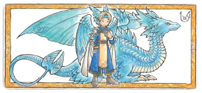
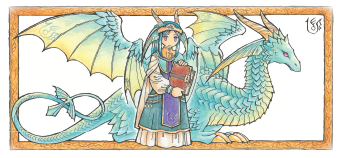
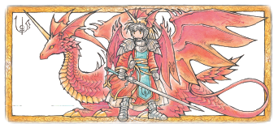
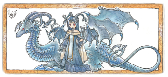

Em Ryuutama, o Mestre (GM) interpreta um "Ryuujin", um guardião oculto do mundo que zela pelos Viajantes...
Existem quatro tipos principais, cada um focado em um estilo de história diferente:

Contos de romance, amizade, episódios comoventes, drama humano, família e animais estão sob a alçada dos Ryuujins-Azuis. Ele têm poderes para fortalecer os laços entre os Viajantes e recompensar a bondade.

Contos de jornadas, peregrinações, aventura, exploração e esperança são o domínio dos Ryuujins-Verdes. Embora suas habilidades possam ser consideradas simples, eles são muito versáteis e, portanto, uma ótima escolha padrão para uma GM novata.

Contos de batalhas, guerra, crescimento e experiência, caça a Monstros e exploração de masmorras são dos domínio dos Ryuujins-Carmesins. Eles não só aumentam o caos no campo de batalha, como também têm poderes que ajudam os viajantes em batalhas.

Contos de conspiração, traição, assassinato, tragédia, corrupção, suspense e a resolução de mistérios se enquadram nas histórias que os Ryuujins-Pretos controlam. Eles podem conceder segredos sombrios aos viajantes e encher corações de pavor.